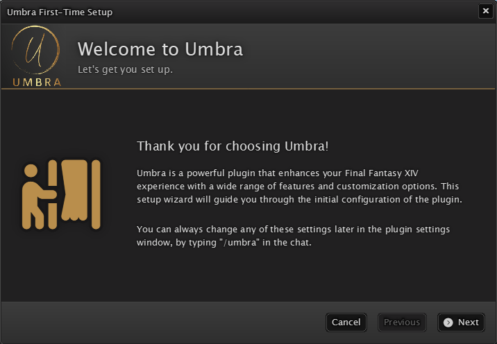

Welcome to Umbra!
Transform your Final Fantasy XIV gameplay experience with a fully customizable toolbar that unifies all your essential HUD elements into a single uniform interface. Effortlessly track quest objectives, gathering nodes, FATEs, and more with 3D world markers. Designed for complete modularity, Umbra lets you tailor every aspect of your toolbar and markers to match your unique playstyle, ensuring a seamless integration with your existing UI. Dive into a new level of convenience and customization with Umbra!

Installation

Umbra is available for download via the official plugin repository. Simply open the Dalamud Plugins window
and search for Umbra XIV to install the plugin. Once installed, you will be greeted with a "first-time setup"
window that will guide you through the initial configuration process. Follow the on-screen instructions to
for a quick and easy setup.
Once the first-time setup is complete, you can access the settings window by typing /umbra in
the chat or by clicking the Umbra item in the "system" menu if you've chosen to start with a preconfigured
toolbar. From here, you can customize everything the plugin has to offer to your heart's content.
Frequently asked questions
Q: Can I use Umbra with other plugins?
A: Yes! Umbra is designed to work seamlessly with other Dalamud plugins. You can use it alongside any other
plugin without any issues.
Q: Can I share my toolbar and marker settings with other players?
A: Yes! Umbra allows you to export all your settings to text that you can share with other players.
From the settings window, simply head over to "Config Profiles" and hit the "Export to Clipboard" button. A
text representation of your current settings will be copied to your clipboard, which you can then paste into
any chat or text editor to share with others.
Q: Can I customize the appearance of the toolbar?
A: Yes! Umbra offers a wide range of customization options for the toolbar. You can change the size,
position, colors, and more to suit your preferences. Settings regarding size and position can be found in
the settings window under the "General Settings" tab, while color profiles can be created and customized in
the "Appearance" tab. You can even share color profiles with others!
Q: Can I use Umbra in PvP content?
A: Yes! Umbra is designed to work in all types of content, including PvP. However, in order to maintain a
fair playing field, some features are disabled in PvP instances, most notably the world markers. The toolbar
itself will still function as normal, allowing you to track your essential HUD elements.
Q: Can I use Umbra on multiple characters?
A: Yes! Umbra supports character-specific settings, allowing you to customize the toolbar and markers for
each of your characters individually. Simply switch to the character you want to customize, make your
changes, and they will be saved automatically.
Q: Can I use the same configuration across multiple characters?
A: Yes! Umbra offers a feature called "Config Profiles" that allows you to save and load different profiles.
Simply create a new profile in the settings window, configure it to your liking, and save it. You can then
load this profile on any character you want, ensuring a consistent experience across all your characters.
Q: Some toolbar widgets are overlapping each other. What can I do?
A: Umbra's toolbar is divided into three columns, one for the left, center, and right side of the screen.
Widgets are placed in these columns horizontally, and if there is not enough space, they will eventually
start to overlap. To prevent this, make sure to adjust the location and amount of active widgets in the
settings window to ensure they fit your screen resolution.
Q: Some text labels aren't vertically aligned properly. What can I do to fix this?
A: Umbra allows you to use any installed font on your system for the toolbar and markers. Some fonts may not
be vertically aligned correctly due to their design. To fix this, you can adjust the vertical alignment of
text labels in each widget by using the "Text vertical offset" setting in the settings window of each
widget. Alternatively, you can try different fonts to see if they align better based on your preferences by
navigating to the "Appearance" tab in the settings window and selecting a different font from the dropdown
menu.
Contact
If you have any questions, feedback, or suggestions, feel free to reach out via the official
Dalamud Discord server. Umbra has its own dedicated support forum
which you can find in the #plugin-help-forum channel.
Regarding feature requests for toolbar widgets
As I'm always looking for ways to improve the user experience of the game using Umbra, I'm open to
suggestions for new toolbar widgets. However, please keep in mind that toolbar widgets are not meant to
completely replace any existing Dalamud plugin. Any suggestions for new widgets should also be in line with
Dalamud's plugin guidelines, meaning no automation or bot-like behavior is allowed.
Umbra XIV is a fan-made plugin and is not affiliated with Square Enix or any of its affiliates. Final Fantasy XIV is a registered trademark of Square Enix Holdings Co., Ltd. All rights reserved.